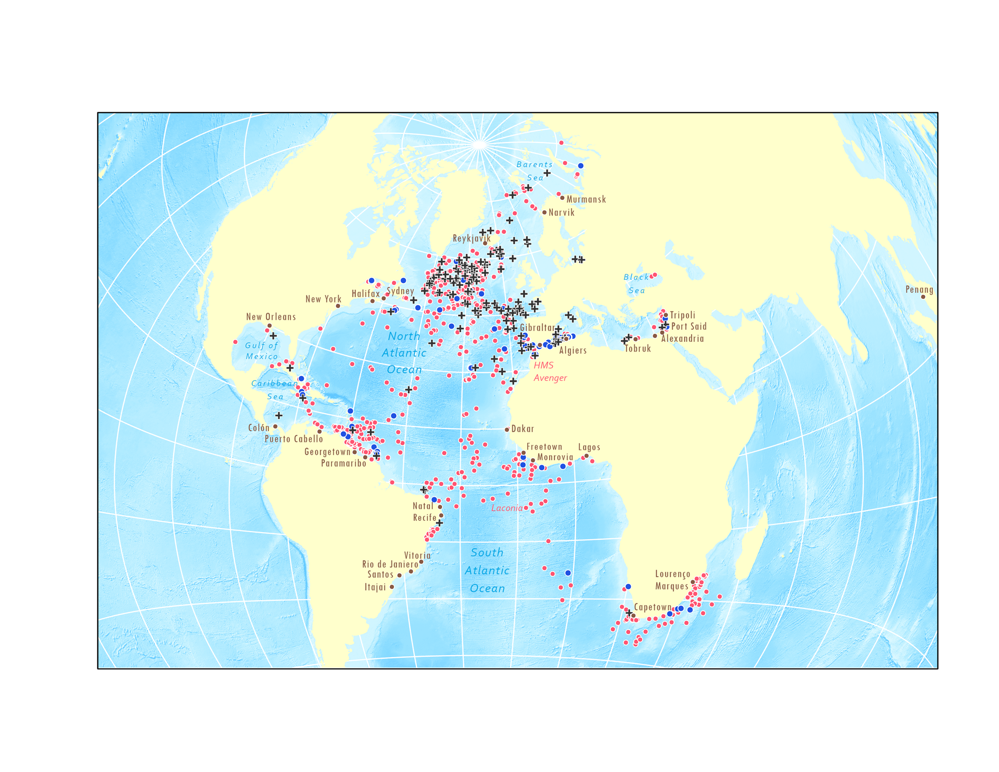
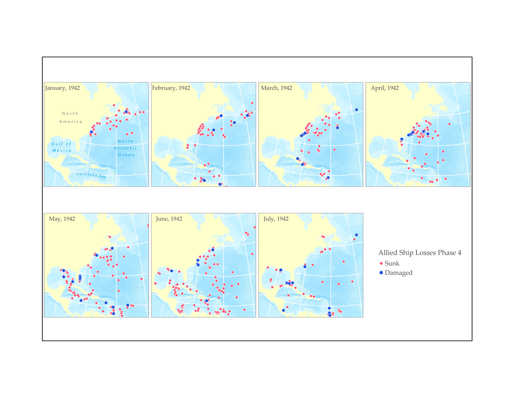
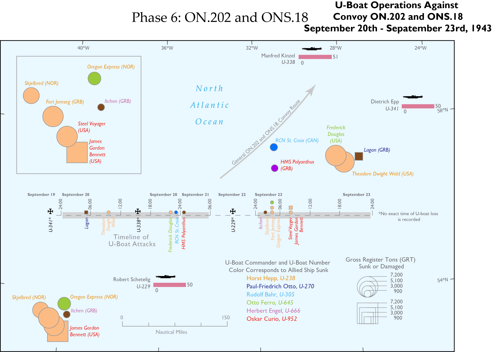
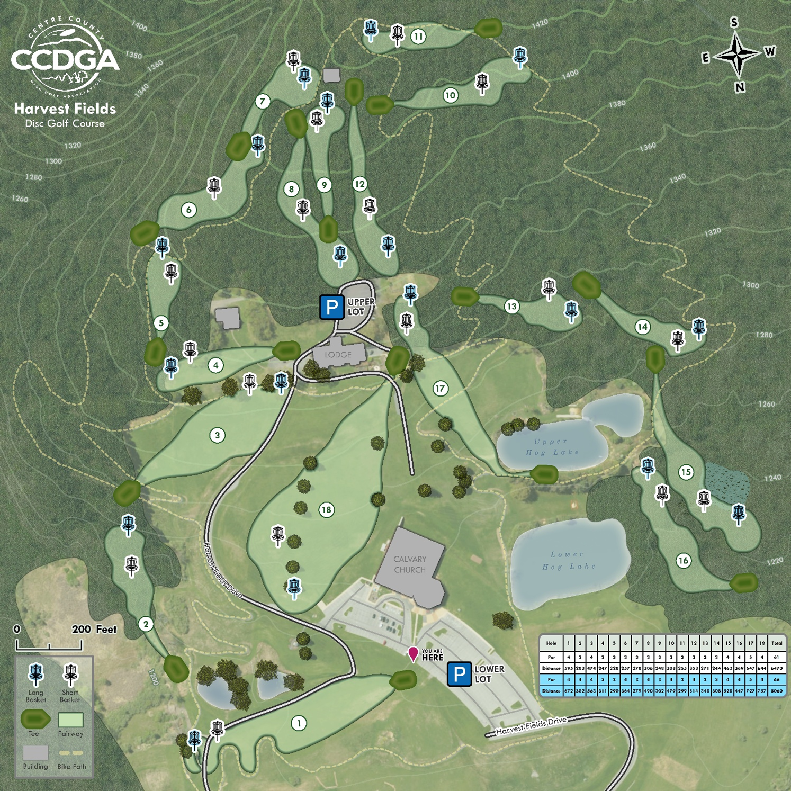

Maps Created for Forthcoming Book by Dr. Fritz Kessler
Chapter 2: The Global Distribution of Allied Vessels Sunk and Damaged and U-Boats Lost

Chapter 3: The Distribution of Allied Vessels Sunk and Damaged by Theater of U-Boat Operations

Chapter 4: Convoy Operations and Wolfpacks

The GeoGraphics Lab at Penn State
Harvest Fields Disc Golf Course

Pollinator Pathways in Easttown Township, PA